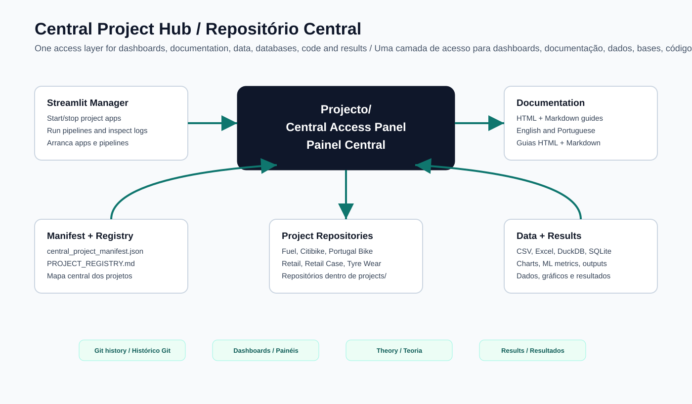
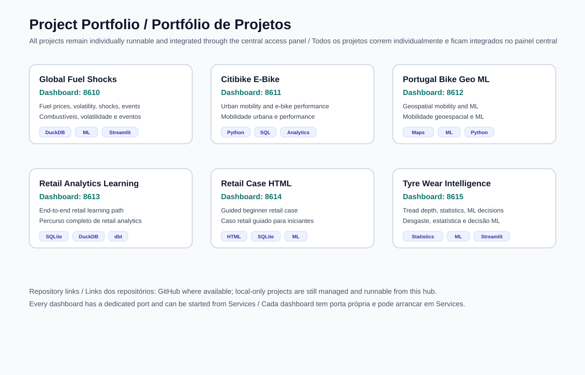
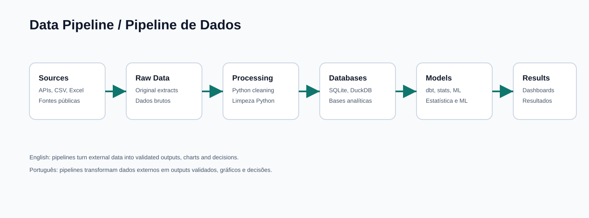
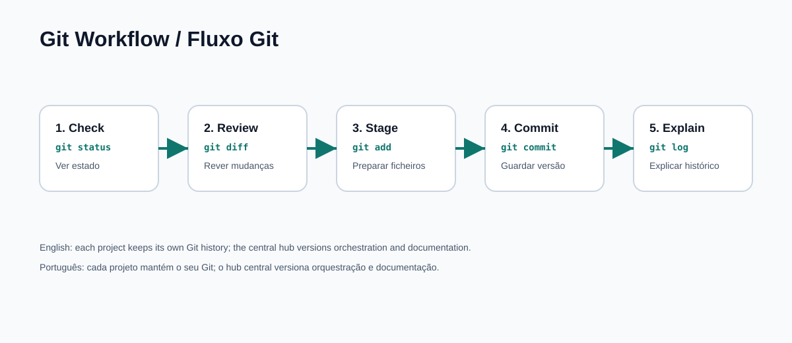
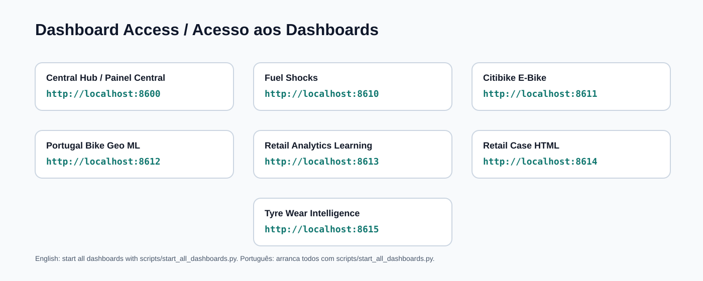

Visual Guide
Versioned diagrams explaining the central hub, projects, pipelines, Git, mathematics, statistics, machine learning and dashboard access.
Central Architecture

Project Portfolio

Data Pipeline

Git Workflow

Mathematics, Statistics And Machine Learning

Dashboard Access
